原文：Runtime Behind Production Deep Agents 来源：LangChain Blog | 2026-04-20 作者：Sydney Runkle, Vivek Trivedy
· · ·
· · ·
在生产中部署长时间运行的 agent 需要专门构建的基础设施。本文涵盖持久执行、记忆、HITL、可观测性，以及 deepagents deploy 如何把这一切交付到生产。
要构建好的 agent，你需要好的 harness。要部署那个 agent，你需要好的 runtime。
| 生产需求 | Runtime 能力 |
|---|---|
| 可靠性 | 持久执行 |
| 记忆 | Checkpoint（短期）、Store（长期） |
| 护栏 | 中间件 |
| 多租户 | 认证、授权、Agent Auth、RBAC |
| 人类监督 | Human-in-the-loop（中断/恢复） |
| 实时交互 | Streaming、并发控制（double-texting） |
| 可观测性 | Tracing、time travel |
| 代码执行 | 沙箱 |
| 集成 | MCP、A2A、webhooks |
| 定时任务 | Cron |
· · ·
Agent 通过运行循环工作：给定 prompt，模型推理、调用工具、观察结果、重复直到完成。
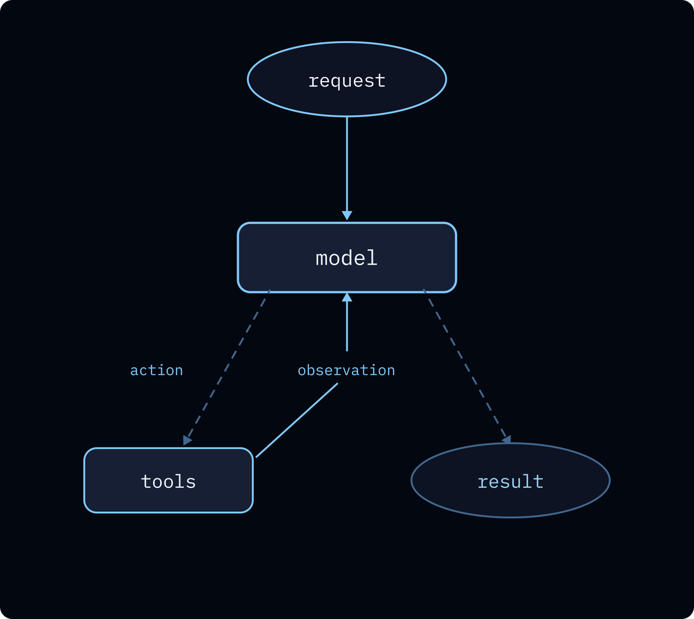
与毫秒级返回的典型 web 请求不同，这个循环可以跨越数分钟或数小时。单次运行可能做几十次模型调用、生成 subagent、或无限期等待人类批准草稿。循环中任何地方的崩溃、部署或瞬态故障都不应该抹掉之前的工作。
实际中你在两个地方感受到这一点：
长运行需要在基础设施故障中存活。 一个花 20 分钟收集资料和综合发现的研究 agent，不能因为 worker 进程死亡就从头开始——agent 已经为 token 付了费并执行了 tool call。你需要的是从最后完成的步骤恢复，所有先前状态完整。
Agent 需要能够停下来等待。 暂停等人类批准交易的 agent 不知道人类会在 30 秒还是 3 天后响应。为此占用 worker 进程或客户端连接不可行。Agent 需要真正停止：释放资源、释放 worker，然后在恢复时精确地从停止处继续。
两个需求由同一个东西解决：持久执行（durable execution）。
thread_id 为键，作为运行的持久游标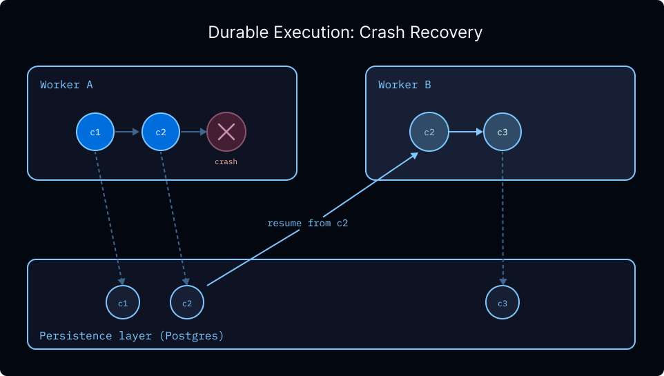
持久性是其他一切的基础。 因为执行可以跨进程边界暂停和恢复，agent 可以无限期等待人类输入、在后台运行、在部署中存活、处理并发输入而不损坏状态。
· · ·
Agent 需要两种不同的记忆，这个区别很重要。
短期记忆是 agent 在单次对话中积累的内容——交换的消息、tool call、跨运行构建的中间状态。存在于线程的 checkpoint 中，作用域为 thread_id，对话结束时（概念上）消失。同一线程上的后续消息能看到该线程上之前的一切。
长期记忆是 agent 跨对话携带的内容——跨对话学到的用户偏好、项目惯例和最佳实践、随每次查询增强的知识库。这些不属于任何单个线程，是用户级或组织级上下文，应该在 agent 的每次对话中持久存在。Checkpoint 无法做到这一点，因为 checkpoint 状态作用域为单个线程。
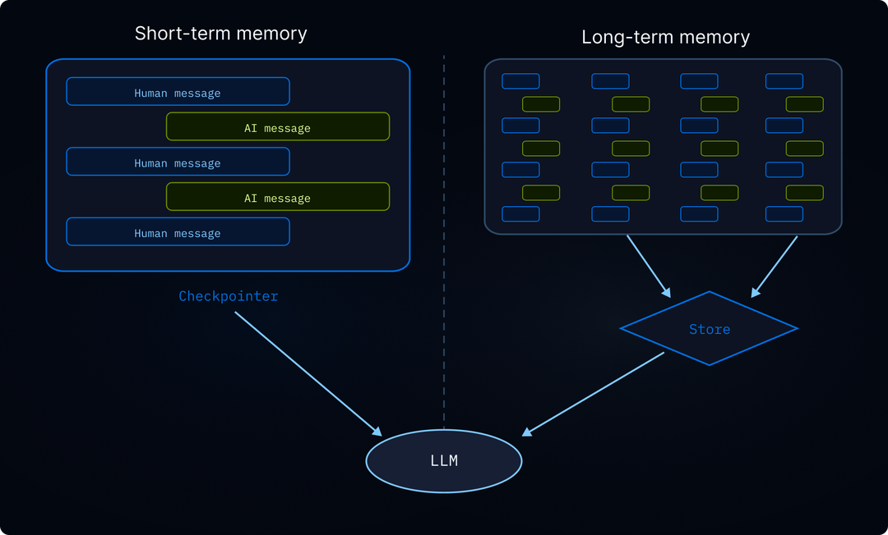
长期记忆使用 Agent Server 内置的 store——一个 key-value 接口，记忆按命名空间元组组织（如 (user_id, "memories")），跨线程持久化。Agent 在一次对话中写入 store，在下一次对话中读取。默认由 PostgreSQL 支持，支持通过 embedding 配置进行语义搜索（按含义而非精确匹配检索记忆），可以换入自定义后端。命名空间结构灵活：按用户、assistant、组织或任何适合你数据模型的组合来划分作用域。
因为数月积累的记忆是系统产出的最有价值数据，它存在哪里很重要。Store 可通过 API 直接查询，自托管时存在你自己的 PostgreSQL 实例中。将数据保持在你控制的标准格式中，才能在模型之间迁移、分析它、或在 agent 之外构建。
· · ·
Agent 服务多个用户时出现三个问题：
隔离用户数据。 用户 A 的运行应该只触及用户 A 的线程，只读取用户 A 的记忆。自定义认证作为中间件在每个请求上运行：你的 @auth.authenticate 处理器验证凭证并返回用户身份和权限，附加到运行上下文。授权处理器通过在创建时标记资源所有权元数据、在读取时返回过滤字典来强制谁能看到或修改什么。
让 agent 代表用户行动。 Agent 经常需要用用户凭证调用第三方服务——读取他们的日历、发布到他们的 Slack、在他们的仓库开 PR。Agent Auth 处理 OAuth 流程和 token 存储——用户认证一次，agent 可以在后续运行中代表他们行动。
控制谁能操作系统本身。 与终端用户访问分开，还有你的团队中哪些成员可以部署 agent、配置它们、查看 trace 或更改认证策略的问题。RBAC 处理这种操作者级别的访问控制。
三层组合：终端用户通过你的认证处理器认证，agent 通过 Agent Auth 调用第三方服务，你的团队在 RBAC 策略下操作部署。
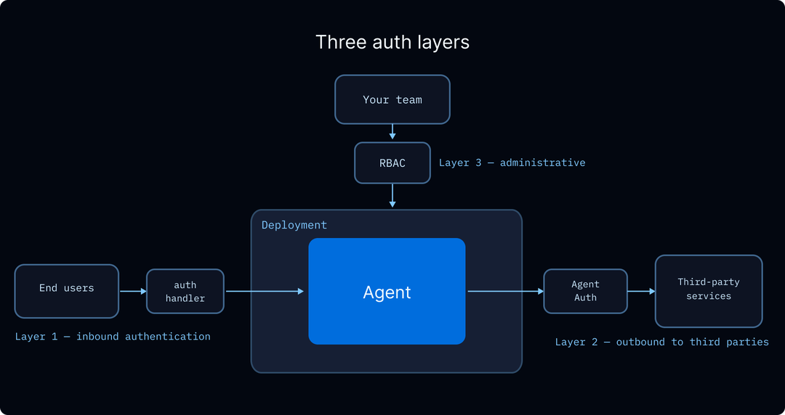
· · ·
Agent 通过运行循环工作：给定 prompt，模型推理并决定调用工具，观察结果，重复直到完成。大多数时候你希望这个循环不间断运行——价值就在这里。但有时你需要人类在循环中间的关键决策点。
两种常见场景：
审查提议的 tool call。 在 agent 执行后果性操作（发邮件、执行金融交易、删除文件）之前，人类看到它即将做什么并决定如何响应。以邮件为例：agent 起草消息并在发送前暂停。你可以原样批准、编辑主题或正文后发送、或拒绝并给出修改请求让 agent 修改后重试。
Agent 提出澄清问题。 有时 agent 到达一个无法自行解决的决策点——不是因为缺少工具，而是因为正确答案取决于人类判断或偏好。Agent 直接提出问题："我找到三个匹配该模式的配置文件，应该修改哪个？"或"这应该部署到 staging 还是 production？"你的回答成为中断的返回值，agent 从停止处继续。
Agent Server 用两个原语处理这个：interrupt() 暂停执行并向调用者展示 payload；Command(resume=...) 用人类的响应继续。它们合在一起让你构建审批门、草稿审查循环、输入验证，以及任何需要人类在执行中途介入的工作流。
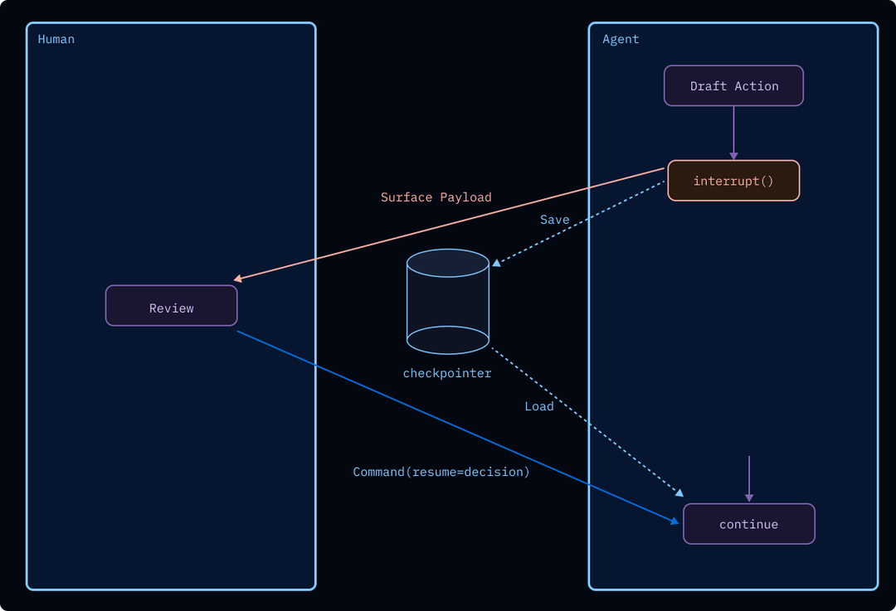
底层，interrupt() 触发 runtime 的 checkpointer 将完整图状态写入持久存储，以 thread_id 为键。进程然后释放资源并无限期等待。与在特定节点前后暂停的静态断点不同，interrupt() 是动态的：放在代码任何位置、包在条件中、或嵌入工具函数内，让审批逻辑跟着工具走。当 Command(resume=...) 到达时——几分钟、几小时或几天后——resume 值成为 interrupt() 调用的返回值，执行从停止处精确恢复。因为 resume 接受任何 JSON 可序列化值，响应不限于批准/拒绝：审查者可以返回编辑后的草稿、人类可以提供缺失上下文、下游系统可以注入计算结果。当并行分支各自调用 interrupt() 时，所有待处理中断一起浮现，可以在单次调用中恢复，或在响应到来时逐个恢复。
· · ·
一个花 30 秒产出响应的 agent 让用户盯着转圈看，不知道它在进展、卡住还是即将失败。用户也无法在整个响应完成前开始阅读。Streaming 解决两个问题：部分输出在 agent 产出时流向客户端，用户实时看到响应成形。
Streaming API 支持多种模式：每个图步骤后的完整状态快照、仅状态更新、逐 token LLM 输出、或自定义应用事件。可以组合使用。Run streaming 作用域为单次运行；thread streaming 打开长连接，传递线程上每次运行的事件——当后续消息、后台运行或 HITL 恢复都在同一线程上触发活动时很有用。
Thread streaming 支持通过 Last-Event-ID header 恢复：客户端用最后收到的事件 ID 重连，服务器从那里重放，无间隙。没有这个，每次断连意味着客户端要么错过输出，要么必须从头开始。
第二个实时问题：用户在 agent 仍在处理上一条消息时发送新消息。这在聊天 UI 中经常发生。有人输入问题，意识到意思稍有不同，在第一次运行完成前发出修正。这叫 double-texting，runtime 必须对如何处理它表态。
四种策略，正确的取决于你的应用：
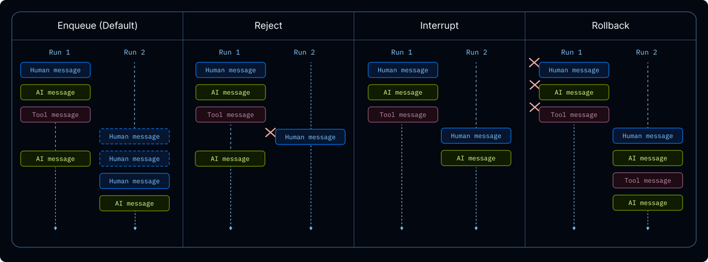
interrupt 给出最灵敏的聊天感觉，但要求你的图能干净地处理部分 tool call（中断命中时已发起但未完成的 tool call 可能需要在恢复时清理）。enqueue 是最安全的默认——不会损坏状态，代价是让用户等待。
· · ·
不是每个生产关注点都能表达为"持久地运行循环"。有些必须塑造循环本身：拦截模型输入、过滤工具输出、强制限制昂贵操作。这些策略属于代码而非 prompt——需要每次都运行，而非模型碰巧记住时才运行。
两个具体案例：
两者都通过中间件（middleware） 处理，在定义的 hook 处包裹 agent 循环——before_model、wrap_model_call、wrap_tool_call、after_model——让策略在每个相关步骤周围确定性执行。
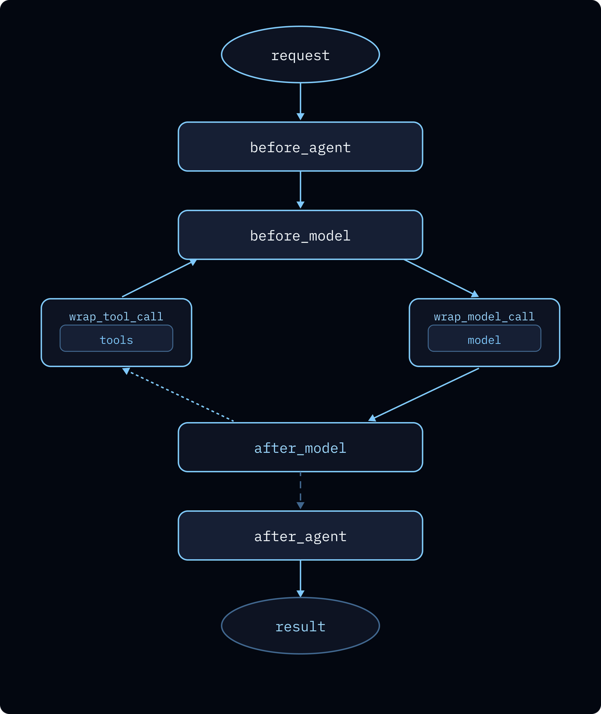
LangChain 内置中间件覆盖常见场景：PIIRedactionMiddleware、ModelRetryMiddleware、ModelFallbackMiddleware、ToolCallLimitMiddleware、SummarizationMiddleware、HumanInTheLoopMiddleware、OpenAIModerationMiddleware，你也可以为应用特定策略编写自定义中间件。
中间件是开源的，但只有在 agent runtime 内部运行时才真正发挥作用。这时，同样的策略成为 runtime 支持的每种交互模式的一部分——streaming、HITL 暂停/恢复、重试、后台运行和长期线程。实际上，这意味着你的 guardrail 和 instrumentation 不是"尽力而为"：它们一致地包裹每次模型调用和每次工具调用，在你期望的精确点，无论 agent 在做什么。
· · ·
你不知道 agent 在生产中会做什么直到运行它。与传统应用不同——你可以从代码推理行为——agent 的执行路径取决于模型在运行时的选择：调用哪些工具、传什么参数、如何解释结果、什么时候放弃换个方法。出问题时，你不能只重读函数——需要看到实际发生了什么。
一个支持工单说"agent 一直反复问同一个问题"。没有 trace，你只能从用户描述猜测。有了 trace，你看到完整执行树：用户的消息、模型计划的响应、它调用的工具、得到的结果、生成的下一条消息、它陷入的循环。你可以按成本过滤找到烧 token 的运行，按错误找到失败的运行，按用户看特定客户的体验。你可以在数千次运行中发现单个 trace 无法揭示的模式。
每个 LangSmith Deployment 自动连接到 tracing 项目。开箱即用获得完整执行树——模型调用、工具调用、subagent 运行、中间件 hook——带有可按用户、时间窗口、成本、延迟、错误状态、反馈或自定义标签查询的结构化元数据。
Trace 是改进循环的基础：
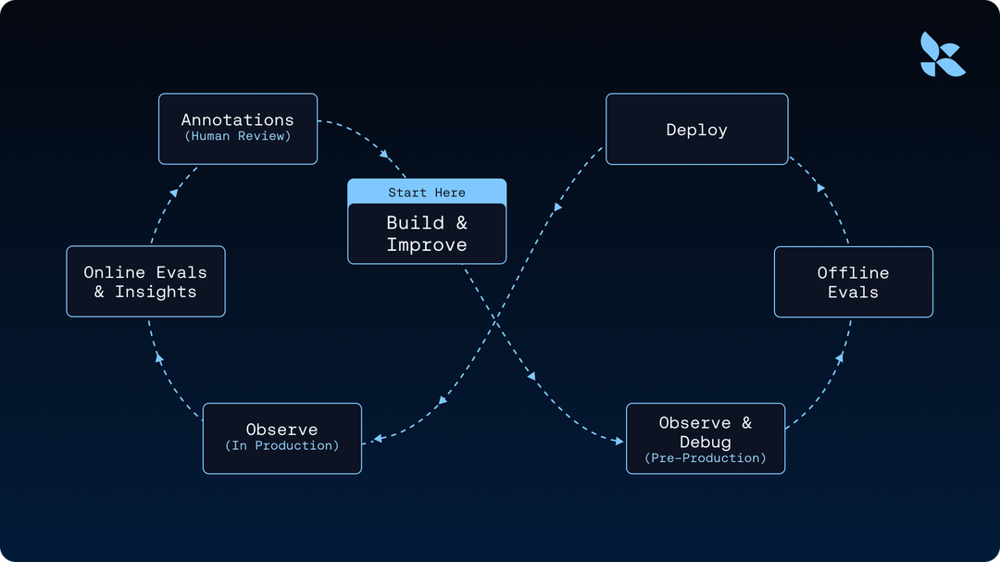
Polly（LangSmith AI 助手）分析 trace 并浮现洞察——常见失败模式、慢工具调用、重复模式——这样你不用手动阅读数千个 trace。Online Eval 自动对生产 trace 运行 LLM-as-judge 或自定义评分器，回归在发生时就被捕获。LangChain 用这个循环仅通过改变 harness 就在 Terminal Bench 2.0 上提升了 Deep Agents 13.7 分——整个论证"agent 改进循环从 trace 开始"值得完整阅读。
· · ·
可观测性告诉你发生了什么。Time travel 让你问"如果某些事情不同会怎样"。
动机场景是调试一个偏离轨道的运行。你的 agent 在 20 步运行的第 5 步做了错误决策：调用了错误的工具、误读了工具结果、或在应该继续时问了澄清问题。你想理解为什么，想尝试替代方案而不从头重跑整个运行。更一般地，任何时候 agent 的路径取决于特定 checkpoint 的状态，你都想要回退到那个 checkpoint、改变状态、让运行的其余部分以不同方式展开的能力。
因为每个 super-step 写一个 checkpoint，运行历史中的每个点都已经是可以返回的快照。Time travel 让这变得显式：选择线程历史中的一个 checkpoint，可选地修改其状态，从那里恢复。修改后的 checkpoint 分叉线程历史——原始保持完整，新路径作为自己的分支向前运行。LLM 调用、工具调用和中断都在重放时重新触发，所以分叉执行的是真实 agent 循环而非存根。
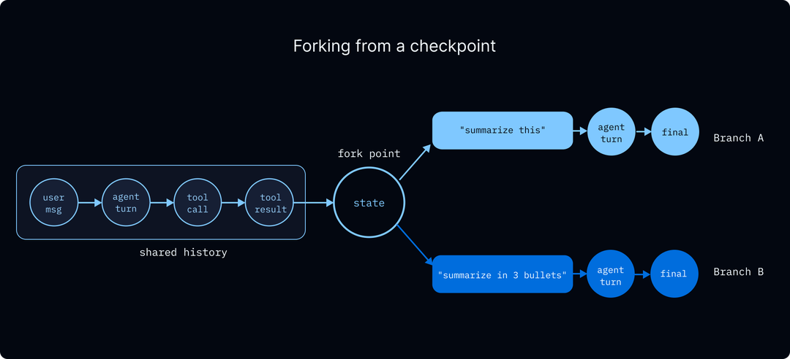
这解锁了否则难以构建的模式：调试为什么 agent 选了工具 A 而非 B、对比两个 prompt 在相同上游上下文下的表现、通过回退到最后好的状态从偏离的运行中恢复、或跨多个分叉探索反事实以理解模型行为。
· · ·
只能调用你预先接线的工具的 agent 受限于你预见到的东西。能运行任意代码的 agent 是通用的：可以安装依赖、克隆仓库、执行测试、运行数据分析、生成文档、渲染图表。这是"带函数调用的聊天机器人"和"能真正做事的 agent"之间的差距。
任意代码执行需要隔离。如果 agent 在你的主机上运行 rm -rf /，你会有糟糕的一天。如果它读取你的环境变量，它会泄露你的 API key。你需要 agent 执行环境和你关心的一切之间的边界，而且在 agent 写第一条命令之前就需要。
在 Deep Agents 中，隔离通过沙箱后端（sandbox backend） 实现。配置实现 SandboxBackendProtocol 的后端时，agent 自动获得 execute 工具用于在沙箱中运行 shell 命令，以及标准文件系统工具。没有沙箱后端时，execute 工具对 agent 甚至不可见。支持的提供商包括 Daytona、Modal、Runloop 和 LangSmith Sandboxes，可以通过单一配置更改在它们之间切换。
Auth proxy 模式： Agent 需要调用认证 API，但把凭证放在沙箱内是安全风险。Proxy 作为 sidecar 运行，拦截出站请求，从 workspace secrets 自动注入凭证——沙箱代码调用 api.openai.com 不带 header，proxy 在出去的路上添加正确的 Authorization header。Secret 永远不进入沙箱，agent 无法泄露它看不到的东西。
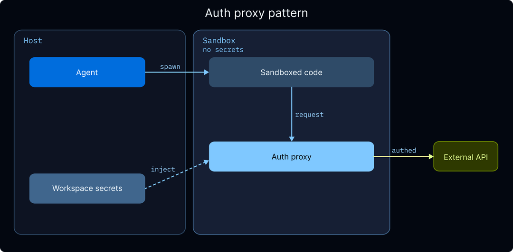
安全提醒：沙箱保护你的主机，不保护沙箱本身。 通过 prompt injection 控制 agent 输入的攻击者（通过抓取的网页、恶意邮件、被污染的工具结果）可以指示 agent 在沙箱内运行命令。沙箱让攻击者远离你的机器，但沙箱内的任何东西——包括直接放在那里的凭证——都是暴露的。Auth proxy 模式正是为此存在。
· · ·
Agent 在能接入人们和组织已经使用的系统时最有用。Coding agent 能触及 GitHub、Linear 和你的 CI 系统时更强大。研究 agent 的输出能馈入你的发布管道时更有用。内部 agent 在其他 agent 能把它作为构建块调用时成为平台。如果每个集成都是手工适配器，你的 agent 就保持孤立。
开放协议通过让 agent 和外部系统发现并相互通信来解决这个问题——双方都不需要知道对方的实现。Agent Server 自动配置三个集成表面：
MCP（Model Context Protocol）——连接 agent 到工具和数据源的开放标准。每个 LangSmith Deployment 自动暴露 MCP 端点，让你的 agent 可被任何 MCP 兼容客户端发现——Claude Desktop、IDE、其他 agent、自定义应用——无需你写适配器代码。反方向，你的 agent 可以调用任何 MCP 服务器（Linear、GitHub、Notion 等数百个）来触及用户已有的工具和数据。
A2A（Agent-to-Agent）——agent 间通信的类似标准，每个部署也自动暴露 A2A 端点。这使跨部署的多 agent 架构可行：一个部署中的编排 agent 可以用双方都理解的协议发现和调用另一个部署中的 worker agent，无需手工 HTTP 契约。
Webhooks——处理出站场景：agent 完成运行，你想触发下游操作而不轮询。创建运行时传入 webhook URL，服务器在完成时 POST 运行 payload 到该 URL。这是把 agent 运行链入现有工作流的方式——研究运行完成触发发布管道、每日摘要完成通知 Slack、合规检查完成写入审计日志。
· · ·
到目前为止讨论的 agent 都是响应式的：用户发消息，agent 响应。但很多有价值的 agent 工作是主动的——按计划发生，无人触发。
两种模式：
Sleep-time compute（休眠时计算）。 Agent 在空闲期做有用工作，用户受益于积累的思考而非按需延迟。夜间研究 agent 追踪你领域的新论文；准备 agent 审查明天日历并起草简报；分类 agent 对隔夜支持工单分类让团队走进一个已排好优先级的队列。工作在没人等待时发生，输出在用户出现时就绪。
健康和监控循环。 Agent 定期检查某些东西并在发现问题时行动或升级。每 15 分钟审查告警的值班 agent、监控 staging 环境回归的 agent、按节奏扫描策略违规的合规 agent。这些需要与面向用户的运行相同的持久性、tracing 和认证，但没有用户在等待。
Agent Server 内置 cron job，定时运行获得与任何其他运行相同的持久性、tracing 和认证保证——无需维护单独的调度器，无需接入第二套可观测性。传入标准 cron 表达式（UTC）和输入，服务器按计划触发运行。
两种风格适合不同模式：
thread_id，每次触发的运行追加到同一对话——适合需要看到自己历史的 agent（每日研究 agent 建立在昨天发现之上、监控 agent 记住已标记的内容）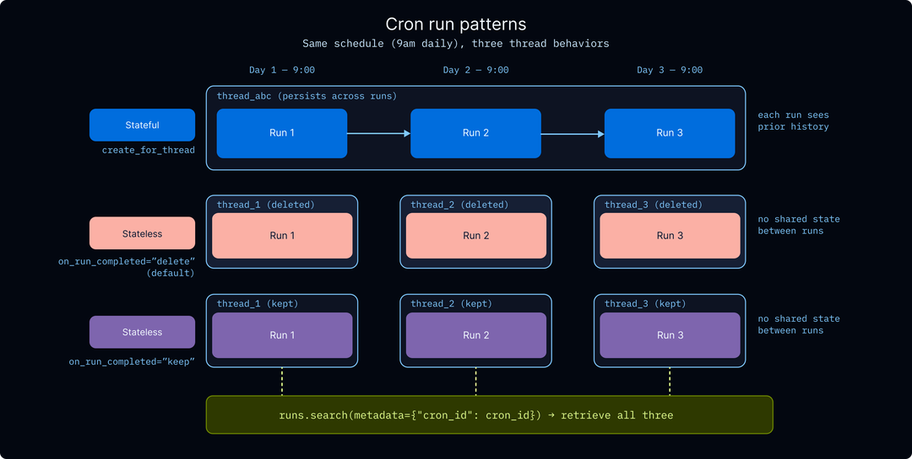
每个 cron 运行出现在 tracing 中、遵守认证处理器和中间件、支持失败时恢复——凌晨 3 点遇到瞬态模型中断的 cron 不会静默失败，它像任何其他运行一样被重试。
· · ·
Agent 基础设施中有一个趋势：转向托管解决方案时伴随着构建者选择的减少——锁定到单一模型提供商、封闭 harness、或隐藏在 API 后面的 harness 功能（如生成加密摘要的服务端 compaction，在一个生态系统外不可用）。实际后果是团队失去对 agent 实际如何工作的可见性，失去在它不工作时改变它的能力。
deepagents deploy 的设计避免这一点。Harness 是 MIT 许可的完全开源，agent 指令使用 AGENTS.md（开放标准），agent 通过开放协议暴露——MCP、A2A、Agent Protocol。没有模型或沙箱锁定，harness 没有黑箱。
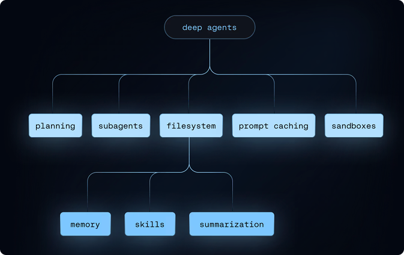
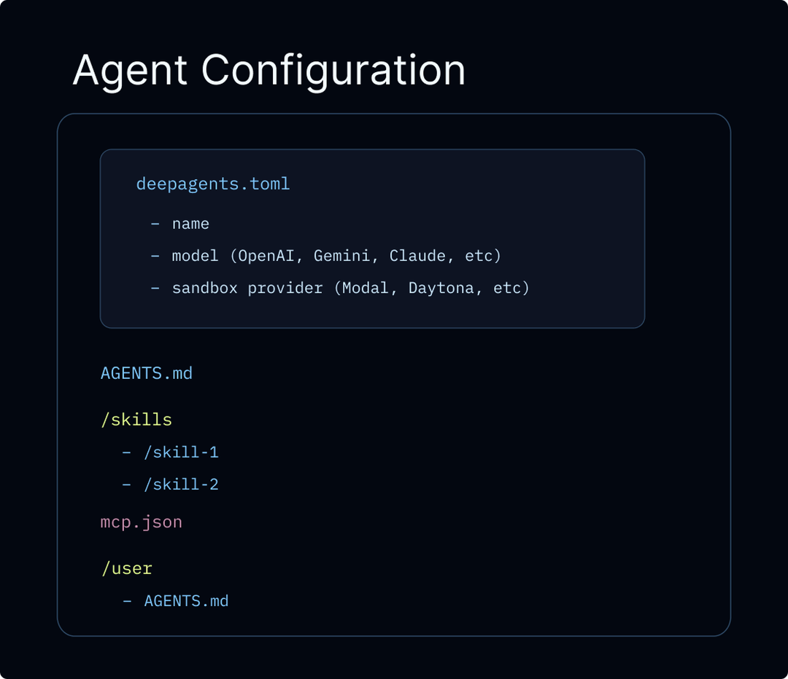
此外，Deep Agents 允许你检查、自定义和扩展 agent 行为的每一层，包括速率限制、重试逻辑、模型降级、PII 检测和文件权限——通过 LangChain 的中间件。
· · ·
本文概述的能力——持久执行、记忆、多租户、guardrail、human-in-the-loop、可观测性、沙箱代码执行、定时运行等——是生产 agent 无法缺少的基础设施需求。deepagents deploy 打包了所有这些，让团队不必从头组装，同时保持技术栈开放、可配置、属于你。
构建 agent 是一个深度迭代的循环：trace 浮现生产中实际发生的事情，online eval 在回归复合之前捕获它们，记忆意味着 agent 随时间变得更有用。基础设施不仅支持运行中的 agent，它是让 agent 变得更好的基础。